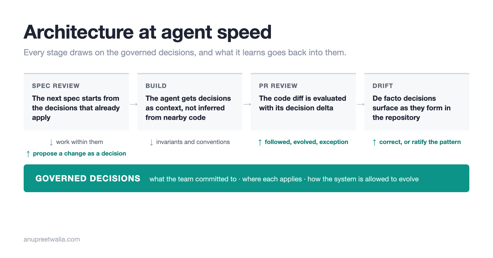

[WIP] Architecture at Agent Speed
Coding agents let repositories evolve faster than teams can absorb the decisions being made. Architecture becomes a set of governed decisions that move through spec review, implementation and drift detection at the same rate as the code.

Coding agents have drastically increased the rate at which code gets written and how quickly repositories evolve. Every code change also carries decisions about the system: a new service creates a boundary, a feature introduces a representation of a domain concept, or an implementation adds a dependency and extends an existing pattern. Most of these decisions look reasonable in the context of the change being made.
Individual decisions generated in a single spec are not the issue. The problem shows up when these decisions stack across multiple features and branches. One feature introduces a pattern, another makes a slightly different choice, and a third extends the first pattern for a new use case. Each plan can be sane independently and each PR can be correct, while the resulting architecture is one we never consciously decided to build.
This isn't a new problem. Engineering teams have always accumulated decisions as they build software, and we use tech specs, ADRs (architecture decision records), architecture reviews, code reviews and conventions to keep the team aligned. A lot of this context also lives with engineers who have worked on the system long enough to know why something is built the way it is. Coding agents change the rate at which these decisions accumulate. Repositories can now evolve faster than the engineering organization can review the decisions being made, absorb them and keep the rest of the team aligned.
There is a limit to how many decisions a team can carry while continuing to make new ones coherently. As a system grew past that limit, we would split the team, give each team a narrower scope and create clear ownership boundaries. Each team needed to carry a smaller part of the system in its head.
Coding agents change that balance. Decisions can accumulate faster than we can reorganize teams around them, and the context that used to live in each team's heads doesn't automatically transfer to the agents doing the implementation. Splitting ownership still reduces the surface a team needs to reason about, but it doesn't give the agent the accumulated decisions it needs when making the next change.
One response has been to write more of that knowledge down in files the agent can read: AGENTS.md, coding guidelines, agent skills, tech specs and ADRs that describe how the team builds software and what it is trying to build. We did the same thing: put the engineering specs in one place and made them available to the coding agent while it planned and implemented the next feature.
That helped, but a plan describes the change we are making now. Architecture also has to account for the decisions we have already made and how the next decision fits with them. A plan can introduce a new service boundary that makes complete sense for the feature being built, and a few weeks later another plan can introduce a different boundary for a similar problem that also makes sense locally. The second decision is still being made in a system where the first one already exists.
Giving the agent both plans provides more context, but it doesn't manage how those decisions stack. Some decisions are conventions, some are invariants, some apply only to one part of the system, and some should change as the system evolves. Putting all of this into a larger AGENTS.md doesn't tell us which decisions the team has committed to, where they apply, or whether the next change is proposing to evolve one.
As the rate of implementation increases, we need a way to manage decisions at the same rate. Architecture becomes a set of governed decisions: which ones the team has committed to, where each applies, and how the system is allowed to evolve.
The codebase contains the results of previous decisions, docs and ADRs contain some of the reasoning, and engineers carry more of it in their heads. Governance makes those decisions explicit without requiring every engineer or agent to carry all of them. The relevant decisions can then be available when a spec is written, when an agent plans a change, when the implementation is reviewed and when the accumulated implementation drifts from them.
Moving review up a level
Technical specs and RFCs have traditionally been among the places where we make and review architectural decisions. A spec might contain the proposed data flow, sequence diagrams, API design, component boundaries and the reasoning behind the approach. Reviewing the spec gave the team a chance to agree on the design before someone implemented it.
Agents are already good at producing a lot of this lower-level design. Given the intent and constraints, they can work through data flows, sequence diagrams, API shapes and implementation plans, and follow established principles like REST. As more of that work moves to agents, human review can focus on the architectural decisions that constrain those designs rather than review every part of the generated technical spec with the same attention.
If a feature needs a new service, for example, the architectural decision isn't every endpoint the agent proposes. We need to decide whether a new service is warranted, which domain owns it, what boundary it creates and what dependencies we allow across that boundary. The agent can work through much of the detailed design once those decisions are made.
This also changes what we preserve from the review. A technical spec records an implementation plan for a particular piece of work, while the architectural decisions made during that review can apply to work that follows it. If we decided that a domain owns a concept, that a service boundary is intentional or that a particular dependency direction isn't allowed, the next feature needs those decisions available without anyone having to find the spec where they were originally made.
The next spec can therefore start with the governed decisions that already apply to the system. It can work within them or propose that one needs to change, and that change can be reviewed as a decision before the agent generates the detailed design and implementation.
Reviewing the implementation
The same decisions need to be available while the agent writes the code. An agent shouldn't have to infer from nearby implementations that a domain owns a concept, that dependencies move in one direction, or that a common pattern is an intentional invariant rather than something that happens to appear frequently in the repository.
Once the implementation comes back, the PR can be evaluated against the decisions that governed it. Alongside the code diff, we can look at the decision delta: whether the implementation followed the decisions we already made, evolved one of them, introduced a new pattern, created an exception or left part of the intended architecture incomplete.
Code review has historically done a lot of this implicitly. A senior engineer sees a dependency in a PR and knows it violates a boundary, someone notices that a new abstraction is inconsistent with a pattern used elsewhere, or a reviewer remembers that the team tried an approach before and decided against it. That works when humans can carry enough of the architecture in their heads and have enough time to find these decisions while inspecting the implementation.
As the volume of generated code increases faster than our ability to review it, finding architectural decisions line by line becomes a poor use of the human judgment available. Surfacing the decision delta lets the review focus on whether the team agrees with how the system is evolving, while the implementation can still be checked for correctness against those decisions.
Observing the architecture as it evolves
Spec review tells us about the architecture we intended to build, while the repository contains the architecture we actually built. If repositories are evolving continuously, we also need to observe whether the accumulated implementation continues to match the decisions we have made.
Concept and domain drift become useful signals here because architectural change doesn't always arrive as one explicit decision in one PR. A concept can start acquiring multiple representations across the repository, two parts of the product can develop slightly different meanings for the same thing, ownership can gradually move across boundaries, or a dependency that started as an exception can become a pattern after several more changes use it.
Each of those changes can be locally correct while their accumulation moves the system in a direction the team hasn't explicitly chosen. Drift gives us a way to see that a de facto decision may be forming in the repository before it is represented in the governed decisions.
That doesn't make all drift a violation. If the existing architectural decision still fits the system, the drift can be corrected before more changes build on it. If the same drift keeps appearing because the existing decision no longer fits what we are building, the team can review the emerging pattern, ratify the new decision and make it available to the next spec and implementation.
As coding agents increase the rate at which repositories evolve, the decisions need to move through the work at the same rate. They are available when a spec is reviewed, become context while the agent builds, are checked against the implementation during review, and are updated when drift shows that the architecture itself is changing.